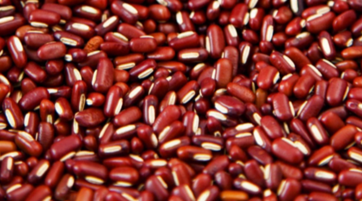
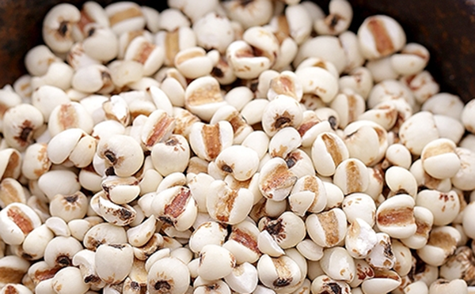
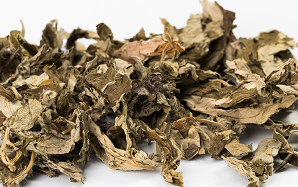

原文连接:https://www.daquan.com/post/11023.html
湿气中会引起很多疾病，随着人们养身意思的提高，大家都知道了治未病，就是预防可能会发生的疾病。预防疾病最重要的就是祛除体内湿气，湿气严重会导致风湿、皮肤病、食欲不振一系列的相关疾病。关于祛湿最快的药是什么，那就是赤小豆了。
祛湿最快的药是什么
1、赤小豆

赤小豆又名红小豆，药性平，其功效主要有着祛水利湿，排毒的作用。因为湿气过多导致肥胖的朋友可以长期服用赤小豆，可以渗水消肿，可以健康减肥。因为湿气过大导致脸上气色偏黄，长各种痘痘的朋友也可以长期服用赤小豆可以排除体内有毒物质，美容养颜。
2、薏苡仁

薏苡仁又名薏米，是养身粥中的常见药材，将薏苡仁和绿豆一同煮粥可以有效的治疗祛湿清热，辅助治疗湿热引起的疾病。薏苡仁的功效主要的祛湿健脾，长期食用薏苡仁有着健脾祛湿的功效，并且薏苡仁还有着抗癌、提高人体免疫力的作用，薏苡仁是可以常吃的祛湿滋养身体的药材了。
3、茯苓
茯苓是真菌的一种，其药效平，有着健脾祛湿，消肿安心的功效，茯苓的祛湿之力非常强，虽然不能当食材食用，但是可以在养身茶中加入4-5块茯苓一起煮水喝上一天。茯苓的祛湿利尿能力非常强，煮养身茶最好一天放茯苓一天不放，如果出远门最好不要放茯苓，避免出门尴尬。
4、厚朴
厚朴又名重皮，药性为温，并且走肺经和胃经所以厚朴祛湿有着燥脾清痰的作用，因为湿邪过重导致痰多，经常食欲不振，有恶心呕吐的感觉的可以将厚朴炒制后放入水中煮养生茶，每天服用。厚朴祛痰功效非常好，并且性温有祛寒湿之邪的功效，还能治疗风湿疾病。
5、泽泻

泽泻又名如意花，其药性偏寒有着很好的渗水祛湿、利尿消肿的功效，主要治疗的是因为湿热导致的疾病。湿邪过重容易在体内化热，导致湿热郁积下焦，引起膀胱不适，发展成尿急、尿不尽、尿涩。泽泻最主要的功效就是降血脂了，高血脂的朋友可以在养身茶中加入炒制后的泽泻一起煮水能有效的降低高血脂。
6、苍术
苍术又名马蓟，药性主要是温苦，能祛湿健脾，散寒祛风，治疗因为湿邪阻滞脾胃导致脾胃虚寒，不能运化，食欲不振，恶心呕吐，还能治疗因为感冒导致的食欲不振。苍术最重要的功效是明目，老年人每天煮养身茶的时候加入苍术不仅祛湿还能治疗老花眼预防夜盲症。
7、艾蒿

艾蒿又名艾叶，一年中最好的艾蒿就是端午前后，艾蒿有着很好的祛风祛湿的作用。可以每年端午在家多备上一些艾蒿然后放在阳台晒干，每天用一把艾蒿煮水泡脚擦拭风湿疼痛的部位，有很好的祛湿止痛的作用。并且还好晒干给碾碎用牛皮纸给卷成一长条的艾条，在拉肚子时熏肚脐眼可以止泻祛寒。
结语：通过上文的介绍，相信大家都清楚了关于祛湿最快的药是什么的答案，长期使用有着很好的祛湿的作用，还能预防风湿疾病。